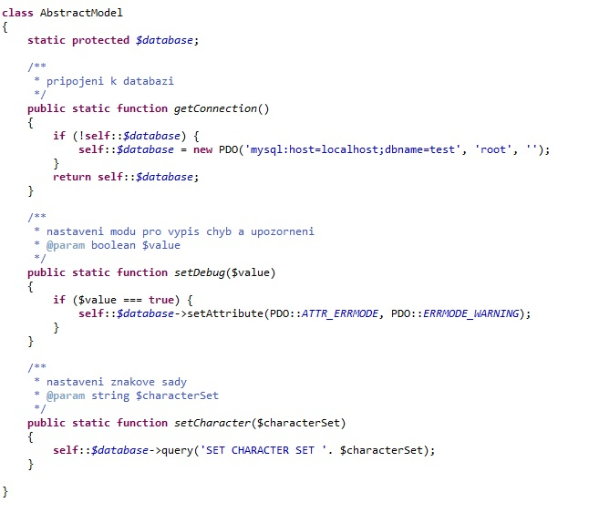

Dnes si ukážeme, jakým způsobem můžeme přistupovat k databázi. Využijeme k tomu PDO rozhraní (PHP Data Objects), které s sebou přineslo PHP 5.1.
Zde máme aspoň základní přehled toho, co nám PDO nabízí:
Nyní se vrátíme k předchozímu příkladu, který si upravíme tak, abychom využili PDO rozhraní. Pro to, abychom dále oddělili logiku aplikace, si vytvoříme novou třídu, kterou si nazveme jako AbstractModel.php a do které umístíme základní operace prováděné nad databází. Funkce getConnection() nám nyní zprostředkuje samotné připojení k databázi a zároveň si na jejím příkladě ukážeme použití statické metody.
Sama statická metoda může pracovat pouze se statickými členy třídy. Podstatné je to, že se statické metody a členy vztahují k samotné třídě a tedy nemají vztah ke konkrétní instanci (nevytváří se žádná instance). Statické metody by měly obsahovat to, co je charakteristické pro celou třídu, ne pro její instance. Proto pro přístup ke statickým metodám a atributům se nebudeme odkazovat na "tento objekt" (neexistuje), nepoužijeme tedy $this, protože se neváže k instanci, ale pro přístup ve vlastní třídě musíme použít self:: a pro přístup do rodičovských tříd parent::. Zvenku pak ke statickým metodám přistupujeme pomocí dvojtečkové notace např. AbstractModel::getConnection();.